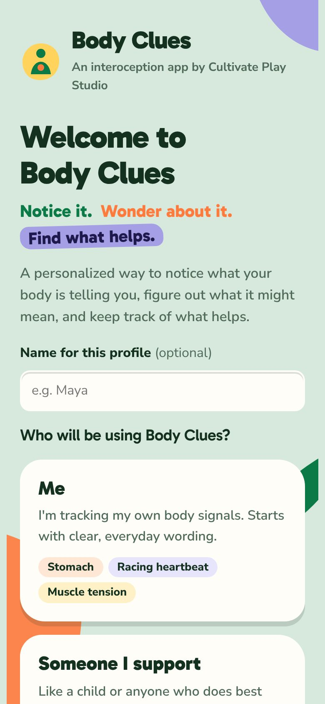
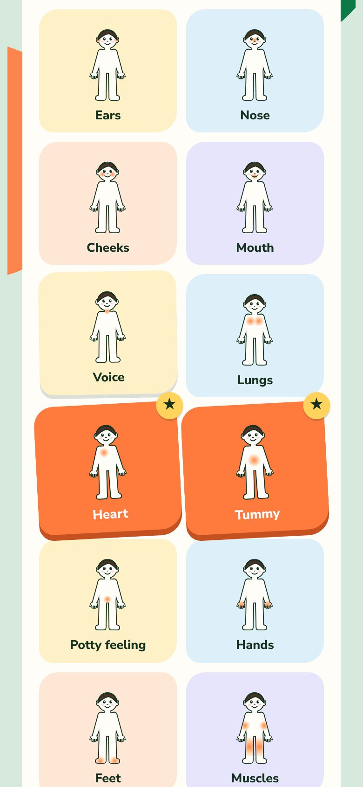
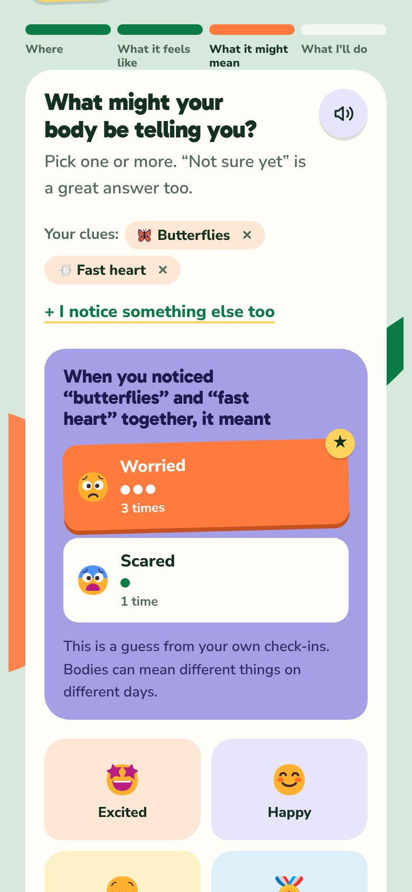
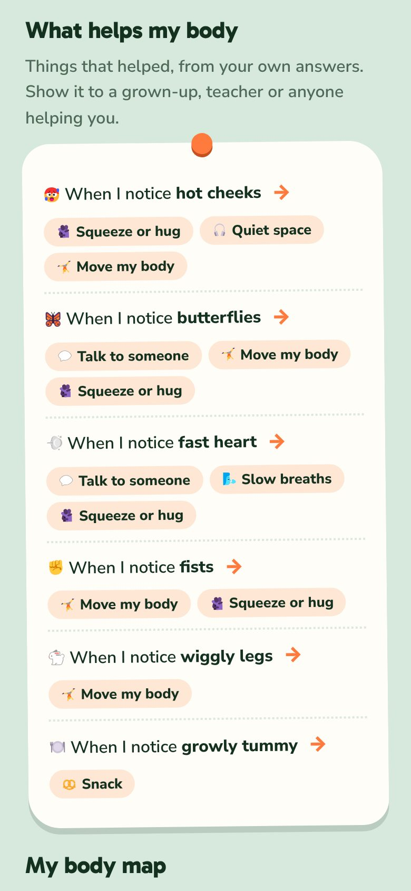

An interoception app by Cultivate Play Studio
Notice it.Wonder about it.Find what helps.
A personalized way to notice what your body is telling you, figure out what it might mean, and keep track of what helps. Made by pediatric therapists for kids, teens and adults, for families at home and for therapists to use in sessions.
Email me when it launchesOr write to info@cultivate-play.com.

Each check-in takes about a minute. There are no right answers and nothing to keep up with.

Tap the parts of the body that are sending a clue, then pick what it feels like: butterflies, a fast heart, wiggly legs, or something in your own words.

Body Clues remembers past check-ins and gently suggests what a clue has meant before. "Not sure yet" is always a great answer.

Try a strategy and say whether it helped. Over time it builds a personal "What helps my body" toolkit to share with family and teachers.
Body Clues treats every sensation as information worth exploring, never as a problem to fix or a behavior to correct. It's neurodiversity-affirming, follows each person's lead, and celebrates noticing, including "not sure yet" and "it's okay just as it is."
We're finishing Body Clues now. Email info@cultivate-play.com and we'll let you know as soon as it's ready.
Interoception is the sense that tells us what's happening inside our bodies, like hunger, a racing heart, needing the bathroom or feeling tired. Noticing these signals helps us understand our emotions and needs and figure out what helps.
Kids, teens and adults, including neurodivergent people who are still learning to read their body's signals. Parents, therapists and teachers can set it up for someone they support, or use it alongside them.
Check-ins are saved on your family's own device, not on our servers. You can save a backup file to move them to another phone or tablet, and a care team summary is only shared when you choose to send it.
No. Body Clues is a tool for noticing and learning, not a diagnosis or a substitute for therapy. Many families find it helpful to bring their patterns to sessions with their occupational therapist, speech therapist or counselor.